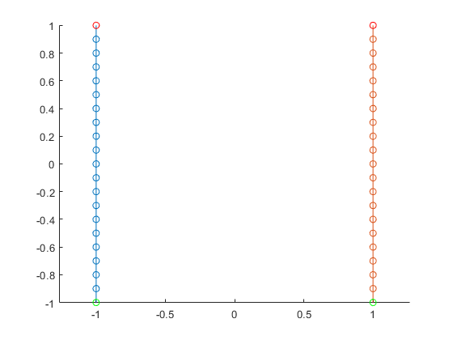
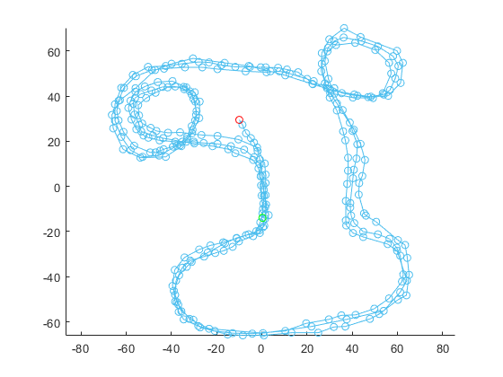
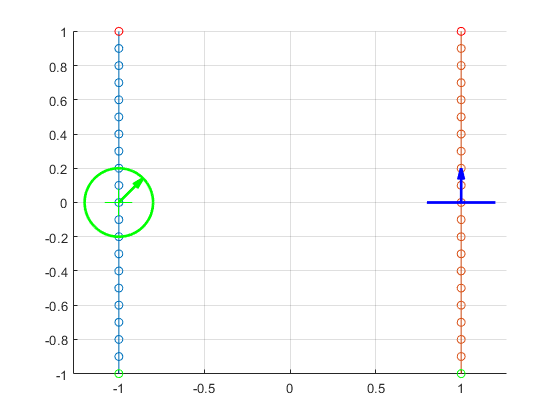
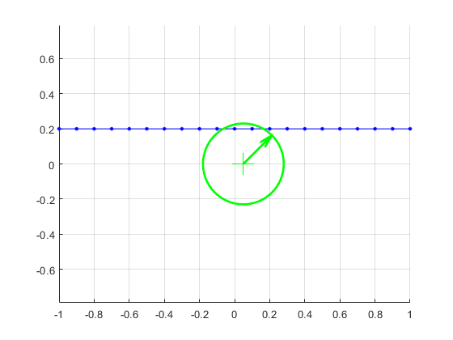
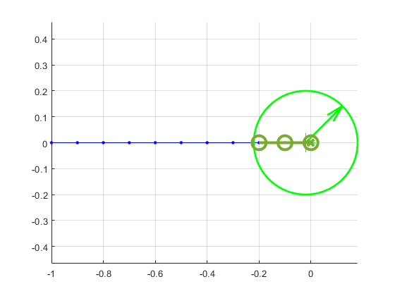
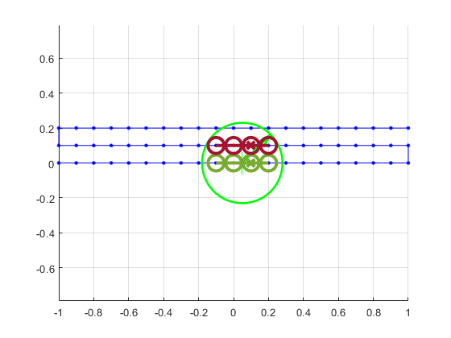
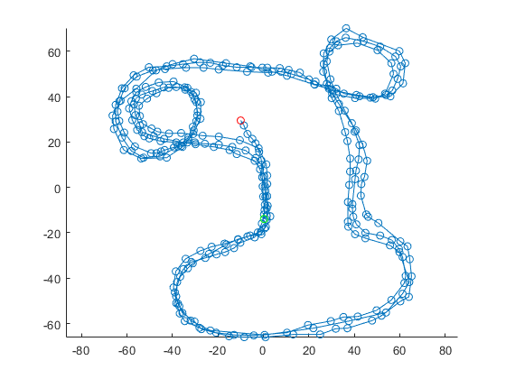

Contents
Introduction to and Purpose of the Code
This is the explanation of the code that can be found by running script_demo_Laps.m This is a script to demonstrate the functions within the Laps code library. This code repo is typically located at: https://github.com/ivsg-psu/FeatureExtraction_DataClean_BreakDataIntoLaps
If you have questions or comments, please contact Sean Brennan at sbrennan@psu.edu
The purpose of the code is to break data into "laps", namely portions of data defined by start and end points, and in some cases, even allowing excursion points that must be "hit" between start and end points. The reason for this code is that it is very common that data collection in the field passes repeatedly over a test area, even in one data set, and thus one must be able to quickly break the code into individual data groups with one grouping, or "lap", per traversal.
Dependencies and Setup of the Code
The code requires several other libraries to work, namely the following
- DebugTools - the repo can be found at: https://github.com/ivsg-psu/Errata_Tutorials_DebugTools
- PathClassLibrary - the repo can be found at: https://github.com/ivsg-psu/PathPlanning_PathTools_PathClassLibrary
Each should be installed in a folder called "Utilities" under the root folder, namely ./Utilities/DebugTools/ , ./Utilities/PathClassLibrary/ . If you wish to put these codes in different directories, the function below can be easily modified with strings specifying the different location.
For ease of transfer, zip files of the directories used - without the .git repo information, to keep them small - are included in this repo.
The following code checks to see if the folders flag has been initialized, and if not, it calls the DebugTools function that loads the path variables. It then loads the PathClassLibrary functions as well. Note that the PathClass Library also has sub-utilities that are included.
if ~exist('flag_Laps_Folders_Initialized','var') % add necessary directories for function creation utility %(special case because folders not added yet) debug_utility_folder = fullfile(pwd, 'Utilities', 'DebugTools'); debug_utility_function_folder = fullfile(pwd, 'Utilities', 'DebugTools','Functions'); debug_utility_folder_inclusion_script = fullfile(pwd, 'Utilities', 'DebugTools','Functions','fcn_DebugTools_addSubdirectoriesToPath.m'); if(exist(debug_utility_folder_inclusion_script,'file')) current_location = pwd; cd(debug_utility_function_folder); fcn_DebugTools_addSubdirectoriesToPath(debug_utility_folder,{'Functions','Data'}); cd(current_location); else % Throw an error? error('The necessary utilities are not found. Please add them (see README.md) and run again.'); end % Now can add the Path Class Library automatically utility_folder_PathClassLibrary = fullfile(pwd, 'Utilities', 'PathClassLibrary'); fcn_DebugTools_addSubdirectoriesToPath(utility_folder_PathClassLibrary,{'Functions','Utilities'}); % utility_folder_GetUserInputPath = fullfile(pwd, 'Utilities', 'GetUserInputPath'); % fcn_DebugTools_addSubdirectoriesToPath(utility_folder_GetUserInputPath,{'Functions','Utilities'}); % Now can add all the other utilities automatically folder_LapsClassLibrary = fullfile(pwd); fcn_DebugTools_addSubdirectoriesToPath(folder_LapsClassLibrary,{'Functions'}); % set a flag so we do not have to do this again flag_Laps_Folders_Initialized = 1; end
Using Zone Definitions to Define Start, End, and Excursion Locations
To define the start, end, and excursion locations for data, the data must pass through or nearby a geolocation which is hereafter called a "zone definition". There are two types of zone definitions used in this code:
- Point methods of zone definitions - this is when a start, stop, or excursion is defined by "passing by" a point. For example, if a journey is said to start at someone's house and go to someone's office, then the location of the house and office define the start and end of the journey. The specification is given by an X,Y location and a radius in the form of [X Y radius], as a 3x1 matrix. Whenever the path passes within the radius with a specified number of points within that radius, the minimum distance point then "triggers" the zone.
- Line segment methods of zone definitions - this when a start, stop, or excursion condition is defined by a path passing through a line segment. The line segment is given by the X,Y coordinates of the start and stop of the line segment, in the form [Xstart Ystart; Xend Yend], thus producing a 2x2 matrix. An example of a line segment definition is the start line and finish line of a race.
To illustrate both definitions, we first create some data to plot:
full_steps = (-1:0.1:1)';
zero_full_steps = 0*full_steps;
ones_full_steps = ones(length(full_steps(:,1)),1);
half_steps = (-1:0.1:0)';
zero_half_steps = 0*half_steps;
ones_half_steps = ones(length(half_steps(:,1)),1);
path_examples{1} = [-1*ones_full_steps full_steps];
path_examples{2} = [1*ones_full_steps full_steps];
Each of the path_example matrices above can be plotted easily using the "plotLapsXY" subfunction, but this function expects the paths to be in a traversal type so that it is compatible with the Path library of functions. To convert them, we use the conversion utility from the Path library, convert each to "traversal" types stored in a variable called path_data. We then plot the paths.
clear path_data for i_Path = 1:length(path_examples) traversal = fcn_Path_convertPathToTraversalStructure(path_examples{i_Path}); path_data.traversal{i_Path} = traversal; end
Plot the results
fig_num = 222; fcn_Laps_plotLapsXY(path_data,fig_num);
Now, use a zone plotting tool to show the point and line-segment types of zone definitions. The point definition is shown in green, and the segment definition is shown in blue. The segment definition includes an arrow that points in the direction of an allowable crossing.
point_zone_definition = [-1 0 0.2]; segment_zone_definition = [0.8 0; 1.2 0]; fcn_Laps_plotPointZoneDefinition(point_zone_definition,'g',fig_num); fcn_Laps_plotSegmentZoneDefinition(segment_zone_definition,'b',fig_num);

Point zone evaluations
The function, fcn_Laps_findPointZoneStartStopAndMinimum, uses a point zone evaluation to determine portions of a segment that are within a point zone definition. For example, if the path does not cross into the zone, nothing is returned:
fig_num = 1; query_path = ... [full_steps 0.4*ones_full_steps]; zone_definition = [0 0 0.2]; % Located at [0,0] with radius 0.2 [zone_start_indices, zone_end_indices, zone_min_indices] = ... fcn_Laps_findPointZoneStartStopAndMinimum(... query_path,... zone_definition,... [],... fig_num); assert(isempty(zone_start_indices)); assert(isempty(zone_end_indices)); assert(isempty(zone_min_indices));
Index In_zone 1 0 2 0 3 0 4 0 5 0 6 0 7 0 8 0 9 0 10 0 11 0 12 0 13 0 14 0 15 0 16 0 17 0 18 0 19 0 20 0 21 0
And, the default is that three points must be within the zone. So, if a path only crosses one or two points, then nothing is returned.
fig_num = 2; query_path = ... [full_steps 0.2*ones_full_steps]; zone_definition = [0 0 0.2]; % Located at [0,0] with radius 0.2 [zone_start_indices, zone_end_indices, zone_min_indices] = ... fcn_Laps_findPointZoneStartStopAndMinimum(... query_path,... zone_definition,... [],... fig_num); assert(isempty(zone_start_indices)); assert(isempty(zone_end_indices)); assert(isempty(zone_min_indices)); query_path = ... [full_steps 0.2*ones_full_steps]; zone_definition = [0.05 0 0.23]; % Located at [0.05,0] with radius 0.23 [zone_start_indices, zone_end_indices, zone_min_indices] = ... fcn_Laps_findPointZoneStartStopAndMinimum(... query_path,... zone_definition,... [],... fig_num); assert(isempty(zone_start_indices)); assert(isempty(zone_end_indices)); assert(isempty(zone_min_indices));
Index In_zone 1 0 2 0 3 0 4 0 5 0 6 0 7 0 8 0 9 0 10 0 11 0 12 0 13 0 14 0 15 0 16 0 17 0 18 0 19 0 20 0 21 0 Index In_zone 1 0 2 0 3 0 4 0 5 0 6 0 7 0 8 0 9 0 10 0 11 1 12 1 13 0 14 0 15 0 16 0 17 0 18 0 19 0 20 0 21 0 
But, if a path crosses the zone with at least three points, then the indices of the start, end, and minimum of the path are returned.
fig_num = 3; radius = 0.2; query_path = ... [half_steps zero_half_steps]; zone_definition = [-0.02 0 0.2]; % Located at [0.02,0] with radius 0.2 [zone_start_indices, zone_end_indices, zone_min_indices] = ... fcn_Laps_findPointZoneStartStopAndMinimum(... query_path,... zone_definition,... [],... fig_num); assert(isequal(zone_start_indices,9)); assert(isequal(zone_end_indices,11)); assert(isequal(zone_min_indices,11));
Index In_zone 1 0 2 0 3 0 4 0 5 0 6 0 7 0 8 0 9 1 10 1 11 1 Start, end, and minimum indices for good zones: Istart Iend Imin 9 11 11
If there are multiple crossings of the zone, then indices of the start/stop/minimum are returned for each crossing:
full_steps = (-1:0.1:1)'; zero_full_steps = 0*full_steps; ones_full_steps = ones(length(full_steps(:,1)),1); half_steps = (-1:0.1:0)'; zero_half_steps = 0*half_steps; ones_half_steps = ones(length(half_steps(:,1)),1); minimum_number_of_indices_in_zone = 3; fig_num = 5; radius = 0.2; query_path = ... [full_steps 0*ones_full_steps; -full_steps 0.1*ones_full_steps; full_steps 0.2*ones_full_steps ]; zone_definition = [0.05 0 0.23]; % Located at [0.05,0] with radius 0.23 [zone_start_indices, zone_end_indices, zone_min_indices] = ... fcn_Laps_findPointZoneStartStopAndMinimum(... query_path,... zone_definition,... minimum_number_of_indices_in_zone,... fig_num); assert(isequal(zone_start_indices,[10; 30])); assert(isequal(zone_end_indices, [13; 33])); assert(isequal(zone_min_indices, [12; 31]));
Index In_zone 1 0 2 0 3 0 4 0 5 0 6 0 7 0 8 0 9 0 10 1 11 1 12 1 13 1 14 0 15 0 16 0 17 0 18 0 19 0 20 0 21 0 22 0 23 0 24 0 25 0 26 0 27 0 28 0 29 0 30 1 31 1 32 1 33 1 34 0 35 0 36 0 37 0 38 0 39 0 40 0 41 0 42 0 43 0 44 0 45 0 46 0 47 0 48 0 49 0 50 0 51 0 52 0 53 1 54 1 55 0 56 0 57 0 58 0 59 0 60 0 61 0 62 0 63 0 Start, end, and minimum indices for good zones: Istart Iend Imin 10 13 12 30 33 31
Create sample paths
To illustrate the functionality of this library, we call the library function fillPathViaUserInputs which fills in an array of "path" types.
laps_array = fcn_Laps_fillSampleLaps;
We then convert the paths into traversals, compatible with the Path library, using the path library conversion function.
clear data % Convert them all to "traversal" types for i_Path = 1:length(laps_array) traversal = fcn_Path_convertPathToTraversalStructure(laps_array{i_Path}); data.traversal{i_Path} = traversal; end
To show an example of the data load, we can plot the last traversal
fig_num = 1222;
single_lap.traversal{1} = data.traversal{end};
fcn_Laps_plotLapsXY(single_lap,fig_num);
 Definition of zones
Revision History:
2022_03_27:
-- created a demo script of core debug utilities
2022_04_02
-- Added sample path creation
2022_04_04
-- Added minor edits
2022_04_10
-- Added comments, plotting utilities for zone definitions